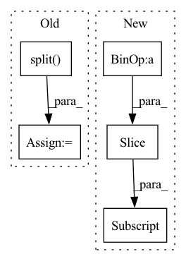

Pattern ID :34657
Before Change
token_length = len(y["text"].split(" "))
if y["ner"] == "DATE":
dates.append(y["text"])
index = len(all_text[:y["characterOffsetEnd"]].split( " ") )
if token_length < 2:
indices.append([index - 1])
else:After Change
indices.append(list(range(index, index + token_length)))
index += token_length
all_text = all_text[:idx + text_len] .replace(text, replaced_text) + all_text[idx + text_len:]
for date_indices in indices:
date = ""In pattern: SUPERPATTERN
Frequency: 3
Non-data size: 5
Instances Fragment ID: 99563262
Project Name: praneet9/representation-learning-for-information-extraction
Commit Name: e369e0fb493febe1b1a3ad69bcef2218109d1134
Time: 2021-02-21
Author: praneetbomma@gmail.com
File Name: utils/extract_candidates.py
M Class Name: AnonimousClass
N Class Name: AnonimousClass
M Method Name: get_dates(2)
N Method Name: get_dates(2)
M Parent Class:
N Parent Class:
M File Name: utils/extract_candidates.py
N File Name: utils/extract_candidates.py
M Start Line: 28
M End Line: 45
N Start Line: 29
N End Line: 46
Before Change
sub_channels = int(tf.math.ceil(input_channel / split))
spx, remainder = inputs[:, :, :, : (split - 1) * sub_channels], inputs[:, :, :, (split - 1) * sub_channels :]
spx = tf.split( spx, split - 1, axis=-1)
gathered_result = []
for id, ii in enumerate(spx):
sp = ii if id == 0 else (sp + ii)
sp = depthwise_conv2d_no_bias(sp, kernel_size=3, padding="SAME", use_bias=True, name=name + "spx_{}_".format(id + 1))After Change
if image_data_format() == "channels_last":
spx, remainder = inputs[:, :, :, : (split - 1) * sub_channels], inputs[:, :, :, (split - 1) * sub_channels :]
else:
spx, remainder = inputs[:, : (split - 1) * sub_channels] , inputs[:, (split - 1) * sub_channels :]
spx = functional.split(spx, split - 1, axis=channel_axis)
gathered_result = []
for id, ii in enumerate(spx): Fragment ID: 99563261
Project Name: leondgarse/keras_cv_attention_models
Commit Name: 7fe31da02f008f26eff018ec2199631227c94efc
Time: 2023-02-10
Author: leondgarse@gmail.com
File Name: keras_cv_attention_models/edgenext/edgenext.py
M Class Name: AnonimousClass
N Class Name: AnonimousClass
M Method Name: split_depthwise_transpose_attention(9)
N Method Name: split_depthwise_transpose_attention(9)
M Parent Class:
N Parent Class:
M File Name: keras_cv_attention_models/edgenext/edgenext.py
N File Name: keras_cv_attention_models/edgenext/edgenext.py
M Start Line: 107
M End Line: 131
N Start Line: 113
N End Line: 143
Before Change
early_stopping=True,
)
generated_text = self.tokenizer.decode(sample_outputs[0][input_ids.size(1) + 1:], skip_special_tokens=True)
generated_text = generated_text.split()
generate_corpus.append(generated_text)
return generate_corpus
def tokenize_text(self, text, suff_text, max_length):After Change
task_prefix_tokens = self.tokenizer.tokenize(self.task_prefix)
task_prefix_len = len(task_prefix_tokens)
for src in source_text:
input_tokens = self.tokenizer.tokenize(src)[:self.source_max_length - task_prefix_len] + task_prefix_tokens
input_ids = torch.tensor(self.tokenizer.convert_tokens_to_ids(input_tokens), dtype=torch.long).unsqueeze(0)
sample_outputs = self.model.generate(
input_ids, Fragment ID: 99563260
Project Name: rucaibox/textbox
Commit Name: 81da6bb852a3637c8053ccf5f9b236dc4283fd86
Time: 2022-01-20
Author: wxDai2001@gmail.com
File Name: textbox/model/Seq2Seq/gpt2seq.py
M Class Name: GPT2Seq
N Class Name: GPT2Seq
M Method Name: generate(3)
N Method Name: generate(3)
M Parent Class: Seq2SeqGenerator
N Parent Class: Seq2SeqGenerator
M File Name: textbox/model/Seq2Seq/gpt2seq.py
N File Name: textbox/model/Seq2Seq/gpt2seq.py
M Start Line: 51
M End Line: 61
N Start Line: 37
N End Line: 50